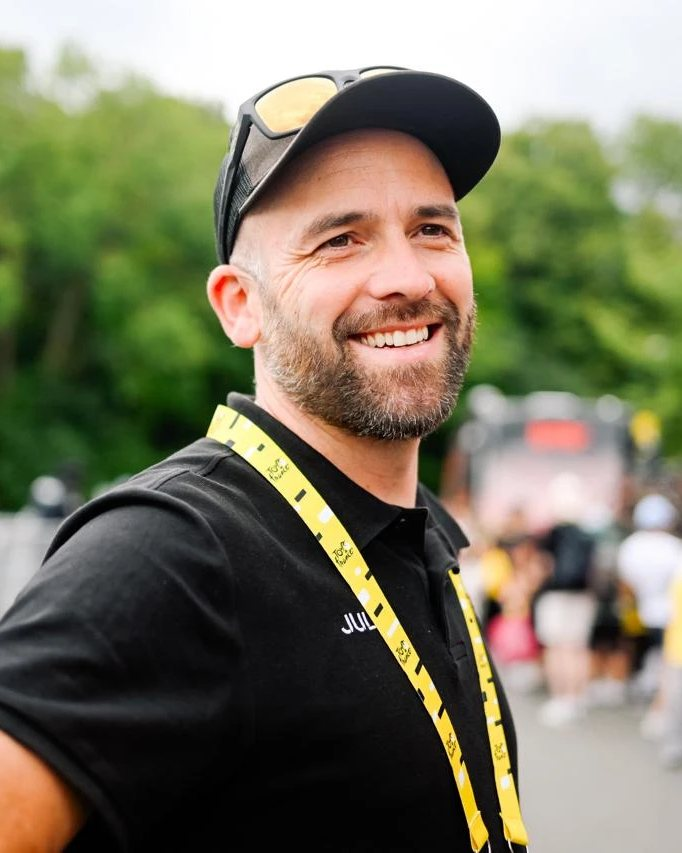
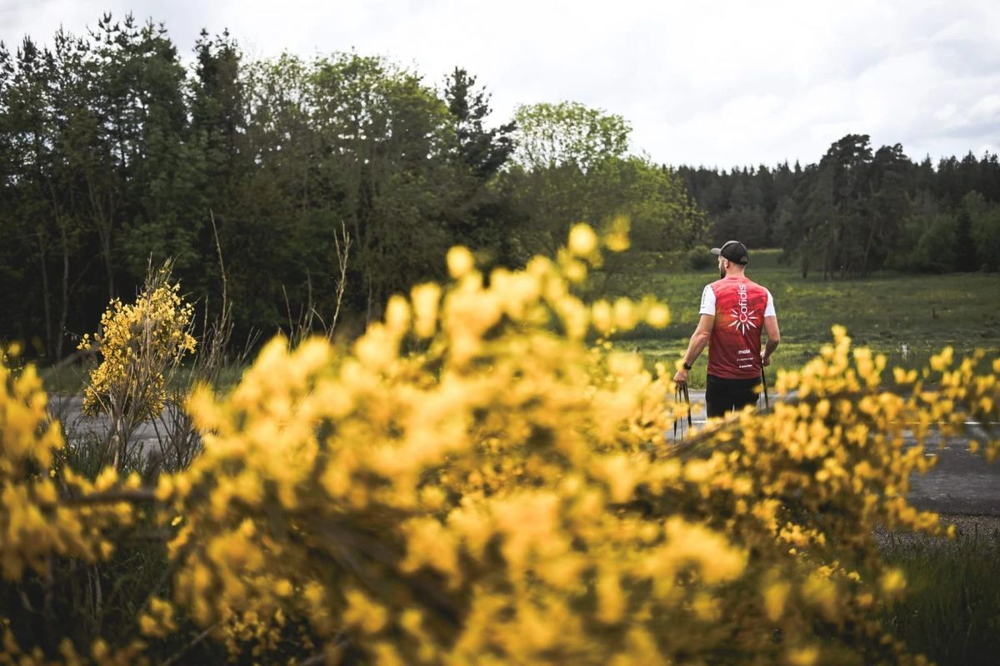
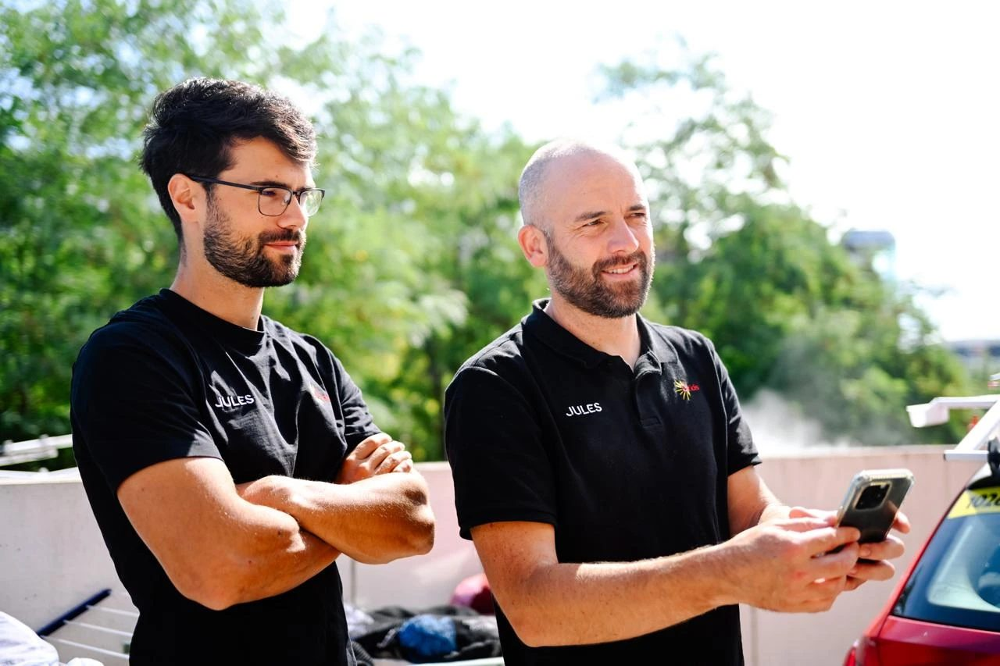
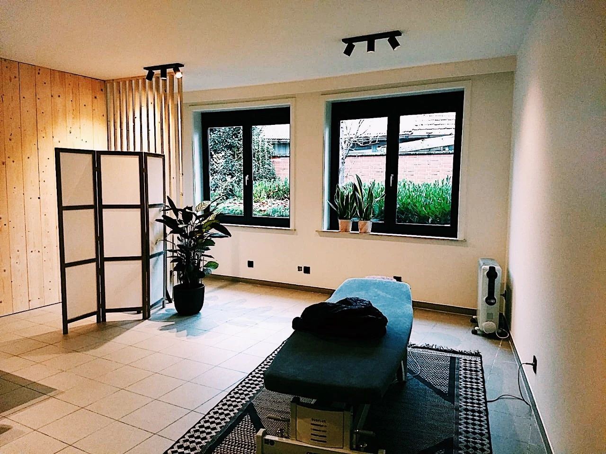

Osteopathie in Rollegem
Welkom! Ik ben Sander Delmeire. Ik kijk naar de mens en zijn verhaal, niet alleen naar de symptomen.

Voor wie
Voor jong en oud, sporters en muzikanten
Je kan bij mij terecht voor alle functionele klachten. Naast het behandelen van een klacht kan ik ook preventief werken, om je lichaam zo goed mogelijk te ondersteunen.
Volwassenen en ouderen
- Nekpijn: ook samen met spanningshoofdpijn of migraine, torticollis
- Rugpijn: lumbago, acute blokkades, chronische lage rugpijn
- Schouder, arm en been: frozen shoulder, carpaal tunnel syndroom, kniepijn, enkelklachten, overbelaste spieren en pezen
- Zenuwklachten: uitstraling, tintelingen, evenwichtsstoornissen
- Spijsvertering: een opgeblazen gevoel na het eten, buikpijn, obstipatie, oprispingen
- Kinderen en baby's: huilbaby's, reflux, een afgeplat hoofdje, voorkeurshouding, groeipijnen
Sporters
Ontstekingen, overbelasting, kniepijn, lage rugpijn tijdens inspanning, slapende handen, nekpijn.
Als sporter vraag je meer van je lichaam dan in het dagelijkse leven. Raken belasting en belastbaarheid uit balans, dan volgen blessures. Ik zoek de zwakke schakel en werk graag samen met je kinesist, trainer of sportarts. Ook preventief, om blessures voor te blijven.

Muzikanten en zangers
Heesheid, stemvermoeidheid, een strakke keel, kuchen, een beperkte stemrange of spanning bij het spelen.
Ik kijk verder dan de stembanden zelf: kaak, nek, ademhaling, borstkas, houding en bekken kunnen allemaal meespelen. Waar nodig werk ik samen met een logopedist, zangpedagoog, NKO-arts of ademcoach.
Over mij
Sander Delmeire, osteopaat D.O.
Na de sportschool in Brugge en een korte omweg via het conservatorium in Gent koos ik voor osteopathie. Ik studeerde aan de International Academy of Osteopathy in Gent en behaalde mijn master in Innsbruck.
Naast de algemene osteopathie liggen mijn passie en expertise bij sport en muziek. Ik werk als freelance osteopaat voor wielerploeg Team Cofidis.
Op dinsdag werk ik in de praktijk van Christophe Tylleman in Nieuwkerke. Ik ben lid van de beroepsvereniging B.V.B.O.

Een eerste afspraak
Hoe het verloopt
We starten met een gesprek: wat is er aan de hand, sinds wanneer, en wat heb je al geprobeerd.
Daarna volgen het onderzoek en de behandeling. Een afspraak duurt 30 à 45 minuten. Draag gerust iets waarin je makkelijk kan bewegen.
Een voorschrift van je arts is niet nodig.
Bij koorts, plots krachtverlies, uitstralende gevoelloosheid of pijn na een val of ongeval.

Voor huisartsen
Samenwerken met artsen
Een deel van mijn patiënten komt via hun huisarts. Een goede samenwerking met artsen vind ik belangrijk. Voor wie wil doorverwijzen, staat alles op een aparte pagina.
Contact
Een afspraak maken
Je kan online een afspraak maken of bellen. Tijdens een behandeling neem ik niet op. Laat gerust een bericht na, dan bel ik je terug.
Overdag is er meestal sneller plaats dan 's avonds.